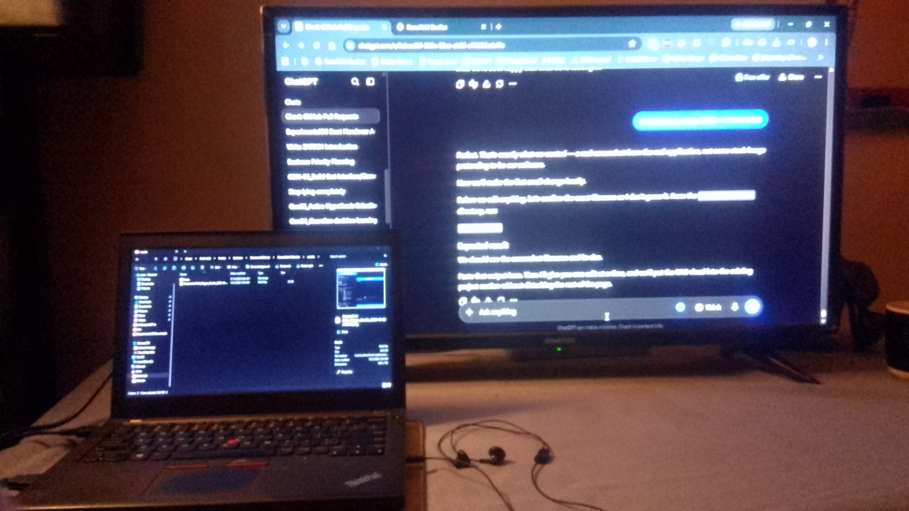

PERSONAL STUDIO
Leon’s Studio
A space for building software, exploring difficult ideas and turning experiments into working systems.
DEVELOPER TOOLS • SYSTEMS • AI & OS LAB • DOWNLOADS
We build practical software, developer tools and experimental systems. We learn before we rush, build carefully, and improve through what we discover.
EXPLORE STONEVELD
StoneVeld is more than a collection of projects. It is a growing space for people, ideas, software and imagination.
PERSONAL STUDIO
A space for building software, exploring difficult ideas and turning experiments into working systems.
PERSONAL STUDIO
Space where Creative Juices can flow freely. Click to unlock Your Creative Journey.

DEVELOPMENT + RESEARCH
The working environment behind StoneVeld — where software is built, tested, researched and questioned.
ACTIVE DEVELOPMENTOPEN SOURCE & DOWNLOADS
Open-source tools, experiments, documentation and other material from the StoneVeld workshop.
OPEN SOURCE
A local-first developer tool for preparing, inspecting and protecting project context for local AI.
MATERIALS
Selected documentation, experiments and technical material made available as the studio develops.
EXPERIMENTAL FIELD
StoneVeld gives new ideas room to grow. We explore, test, learn and change direction when the evidence tells us to.
SYSTEM VISIBILITY
Research into system visibility, evidence, relationships and change. An exploration of how software can observe a machine without blindly changing it.
EXPERIMENTAL COMPUTING
An experimental operating-system research project exploring conversational interaction, behavioural awareness and strict system enforcement.
Not everything needs to become a product. Some ideas need a Laboratory to be tested.
OUR CONSTITUTION
We learn before we rush. We build with purpose. We treat mistakes as information, and we change direction when the evidence tells us to.
Understand the problem before rushing toward the solution.
Every mistake gives us oppertunity to explore, and to learn from it. The failure is refusing to try, to be scared to fail one more time.
Take care with the work, the people using it, and the consequences of what we build.
We test ideas, record what happens, and change course when what we learn tells us to.
Good software shouldn't make you think about the software.f It should help you focus and let ideas flow...
WORKSPACE
StoneVeld's workspace is where experiments become usable tools. Consistancy and Reliability, as we learn. Security Focused.
LET'S TALK
Tell us what you're working on. We may be able to help, or we may discover something worth exploring together.
Contact StoneVeld